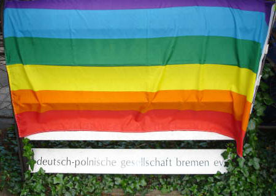

| Demo at deutsch-polnische Gesellschaft Bremen | 11. June 2005 |
 |
|
| The "schwul-lesbische Aktionsgruppe Bremen" did a little demonstration in front of the building of the "deutsch-polnische Gesellschaft Bremen" because we don´t have an embassy in our town. As it was a Saturday every thing was quiet and peaceful. Some people went by and read our letter. I´m sending you three of the pics we took, if you want you can publish them on the website. Please let me know which adress it is! Congratulations on the good info and motivation you gave us! We added some lines to your letter and changed it the way it fit well for the people of the deutsch-polnische Gesellschaft. We e-mailed it to a long list of people involved in there and put in on the front door as well. If you are interested and understand german I´ll paste the text in here below: "Sehr geehrte(r) Herr Nalazek, Frau Striezel, Herr Salanczyk, Es ist schön, dass die Deutsch-Polnische Gesellschaft Bremen e. V. Begegnungen und Dialoge zwischen Polen und Deutschen fördert und somit einen großen Beitrag zur Überwindung -nicht nur historischer- Gegensätze und zur Entdeckung gemeinsamer Zukunftsvisionen im pro-europäischen Konsens leistet. Sie haben recht, das Ziel der Verständigung mit Polen, d. h. Abbau von Vorurteilen, alten Klischeevorstellungen und Stereotypen lassen sich nicht diktieren, sondern sie entsteht durch vielfache Beziehungen zueinander, durch Kenntnisse und das Kennenlernen. Nun ist es leider so, dass manchmal sehr große Steine auf dem Weg zur Verständigung liegen. So hat der Bürgermeister von Warschau, Lech Kaczynski, die für heute, Samstag, 11.06. in Warschau geplante Christopher Street Day-Parade, der international abgehaltenen Demonstration für die Menschenrechte und Akzeptanz von Schwulen, Lesben, Trans und Queers, verboten. Daher werden sich heute in vielen Städten auf der ganzen Welt Menschen vor den Konsulaten oder polnischen (Kultur-) Gesellschaften zusammenfinden, um gegen diesen homophoben und intoleranten Akt des Bürgermeisters Kaczynski zu demonstrieren. Wir fahren nun mit der offiziellen englischen Erklärung zu dieser Aktion fort: " --- origianl text you sent us-- " Wir möchten schließen mit einem schönen Zitat von Ihrer eigenen Webseite: Die Zukunft erkennt man nicht, man schafft sie.
Schwul-lesbische Aktionsgruppe Wärmer Bremen e.V." |
|